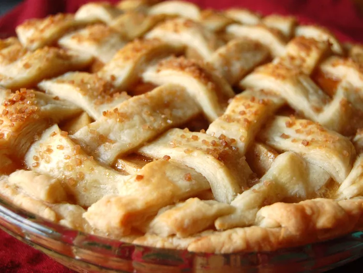

No-Sugar Apple Pie

This sugar-free apple pie is a naturally sweet, tart apple pie recipe with no added sugar, for a wholesome take on a classic dessert.
Ingredients:
- 2 (9 inch) pie crusts
- 1 (12 fluid ounce) can unsweetened apple juice concentrate, thawed
- 3 tablespoons cornstarch
- 1 tablespoon ground cinnamon
- 6 cups sliced green apples
Steps:
- Preheat the oven to 350 degrees F (175 degrees C).
- Whisk 1/3 cup apple juice concentrate together with cornstarch and cinnamon in a small bowl. Set aside.
- Simmer apples with remaining apple juice concentrate in a large saucepan until apples are tender, about 10 minutes. Stir in cornstarch mixture and continue to simmer until thickened. Remove from heat.
- Spoon apple mixture into pastry-lined pie plate. Cover with top crust. Seal and flute edges. Cut steam vents in top.
- Bake in the preheated oven until crust is golden brown, about 45 minutes.
Home